How to use this lesson
§0 · From last time. Registries solve catalogue + discovery; MCP turns them into a standard protocol so any compliant client can use any compliant server.
Business Scenario
HSBC's risk team wants Sherpa to use one of their internal compliance APIs. Building a custom integration would take weeks.
"If they expose it as an MCP server, can Sherpa just pick it up?"
Yes. That's the point.
Bridge to Topic
MCP is a lightweight protocol over stdio or HTTP. A server exposes tools, resources, and prompts; a client (the agent runtime) consumes them. Standardisation eliminates integration glue.
Mind Map

Mermaid source
mindmap
root((MCP))
Server
Tools
Resources
Prompts
Client
Tool discovery
Tool invocation
Resource fetch
Transport
stdio
HTTP SSE
WebSocket
Auth
OAuth
API keys
mTLS
Elaboration
4.1 What MCP standardises
- Tools: callable functions with schemas
- Resources: read-only data the agent can fetch (files, DB rows)
- Prompts: parameterised prompt templates the server provides
4.2 Server lifecycle
- Server starts, advertises its tools/resources/prompts via the MCP handshake.
- Client connects, discovers what's available.
- Client invokes tools as needed.
- Server can push notifications (e.g., new data available).
4.3 Building an MCP server
Pseudocode for HSBC's compliance API:
import { MCPServer } from "@modelcontextprotocol/sdk";
const server = new MCPServer({ name: "hsbc-compliance", version: "1.0.0" });
server.tool({
name: "check_jurisdiction",
description: "Check if a counterparty is in a sanctioned jurisdiction. Returns: { sanctioned: bool, list_name?: string }",
input_schema: { /* ... */ },
handler: async ({ counterparty_id }) => {
return await complianceAPI.checkJurisdiction(counterparty_id);
},
});
server.run();
The handler is plain code; MCP wraps it for any client.
4.4 The composition story
With MCP, you can stack:
- HSBC compliance MCP server
- HSBC GL MCP server
- Public PubMed MCP server (open source)
- A shared "common ops" MCP server
Sherpa's agent runtime composes them; new tools are 1-config-line additions.
Problem Statement
Wrap one of HSBC's existing internal APIs as an MCP server. Connect Sherpa to it.
Solution Walkthrough
lab-7.2/ ships a working MCP server wrapping a mock compliance API. Sherpa connects in 4 lines of config. Tool is discovered, invoked, returns valid output. Total integration time: 90 minutes vs the multi-week custom integration baseline.
Mathematical Foundation
7.1 Integration cost curve
Without standards: O(N×M) — N agents, M tools, each pair needs custom glue. With MCP: O(N+M) — each agent and each tool integrates once.
At N=5 agents and M=50 tools: 250 vs 55 integrations. 4.5× engineering reduction.
Technical Deep-Dive
8.1 stdio vs HTTP transport
stdio is simpler (no network); use for local tools. HTTP+SSE for remote tools, especially across orgs.
8.2 Authentication patterns
MCP supports OAuth flows for delegated access. For internal HSBC tools: mTLS. For public tools (PubMed): API key. Spec is opinionated about flow shape; vendor-flexible on implementation.
8.3 Resources vs tools
If the data is read-only and doesn't have parameters, expose it as a resource (cheaper, cacheable). If it requires parameters or has side effects, expose as a tool.
8.4 Prompt templates
MCP can serve prompts — parameterised templates the server provides. Useful for tools where the right prompt depends on server-side state (e.g., "summarise this trade according to the most recent risk policy").
8.5 MCP server lifecycle in production
A production MCP server isn't a script — it's a long-running service with the usual concerns:
import { MCPServer } from "@modelcontextprotocol/sdk";
const server = new MCPServer({
name: "hsbc-compliance",
version: "2.3.1",
capabilities: { tools: true, resources: true, prompts: false },
});
// Health endpoint for orchestrators to probe
server.tool({
name: "_health",
description: "Health check. Returns server status, version, uptime.",
input_schema: { type: "object", properties: {} },
handler: async () => ({
status: "ok",
version: server.version,
uptime_seconds: process.uptime(),
dependencies: await checkDeps(),
}),
});
// Per-tool rate limiting
const rateLimiter = createTokenBucket({ rate: 100, capacity: 200 });
server.middleware(async (call, next) => {
if (!await rateLimiter.consume(call.tool, 1)) {
throw new RateLimitError(call.tool);
}
return next();
});
// Per-tool observability
server.middleware(async (call, next) => {
const span = otel.startSpan(`mcp.tool.${call.tool}`);
try {
const result = await next();
span.setStatus("ok");
return result;
} catch (err) {
span.setStatus("error");
span.recordException(err);
throw err;
} finally {
span.end();
}
});
await server.serve({ port: 8080, host: "0.0.0.0" });
This shape is what makes MCP usable at scale — not the protocol itself, but the operational discipline around the protocol.
8.6 The MCP client side: connection management
Agents connecting to MCP servers need:
- Connection pooling — one connection per (agent, server) pair; reuse across calls.
- Reconnection logic — exponential backoff with jitter; circuit breaker after N failures.
- Tool discovery cache — refresh tool list on first connect and every N minutes; not on every call.
- Graceful degradation — if MCP server is unavailable, agent should know which tools become unavailable and adapt (e.g., fall back to "I cannot verify this in the current state").
8.7 Cross-org MCP federation
If multiple orgs expose MCP servers and you want one agent to use them all:
const federation = new MCPFederation([
{ name: "hsbc-compliance", url: "https://internal/mcp/compliance", auth: mtls(certs) },
{ name: "pubmed", url: "https://pubmed.ncbi.nlm.nih.gov/mcp", auth: apiKey(env.PUBMED_KEY) },
{ name: "internal-ops", url: "stdio:./mcp-ops-server" },
]);
await federation.discover(); // pulls all tools/resources/prompts
const tools = federation.allTools(); // union; namespaced by server
// tools[0].name === "hsbc-compliance.check_jurisdiction"
Namespacing tools by server prevents collision and gives the model clear provenance signals.
8.8 The "MCP server as a vendor abstraction" pattern
If you depend on a third-party API (say, a credit-score service), wrap it as an MCP server in your control even if the vendor doesn't natively support MCP. Benefits:
- Standardises agent's view (same protocol regardless of vendor).
- Lets you swap vendors without changing agent code.
- Centralises auth, rate limiting, observability for that vendor.
- Enables A/B-ing two vendors via different MCP servers.
This is the production-grade pattern. Don't have agents call vendor APIs directly.
What This Unlocks
- 7.3 sandboxes tools that execute code or interact with sensitive systems.
- 7.4 authorises MCP tool calls with per-tool ACLs.